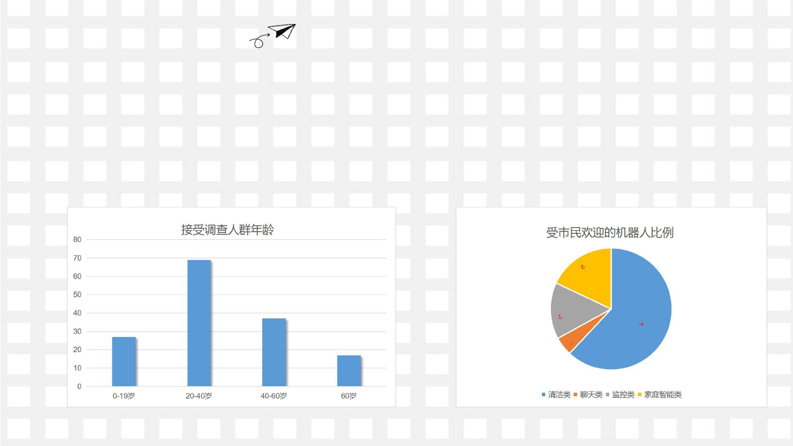
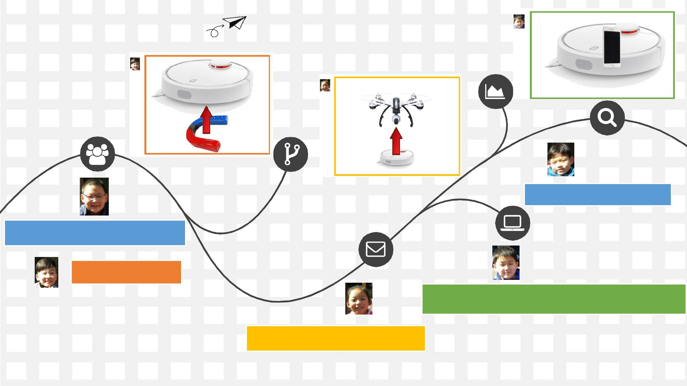

扫码可看报告
目录
我们的团队
Contents
1
我们的选题
2
万能家庭清洁机器人
3
研究结果及创新点总结
4

我们的团队
1
刘映川 指导老师
在研究过程中碰到问
题时给予指导
潘麒辉 组长
建立研究组群，组织组员们开展研究
活动，在小组共同研究的基础上和副
组长合作完成最终的调查报告。
报告中简称“潘”
亢馨田
副组长
收集资料，分析汇总资料，
和组长合作完成最终的调查
报告。报告中简称
“
亢
”
袁鑫宇 组员
收集资料，整理汇总
纸质调查问卷
报告中简称“袁”
成员分工
曹珂粟
组员
收集资料，整理汇总微信
调查结果
报告中简称
“
曹
”
孙铭睿 组员
收集资料，整理汇总
组员收集的资料信息
报告中简称“孙”
黄璟涛 组员
收集资料，根据讨论
结果绘制机器人模型
报告中简称“黄”

我们的选题
2
建群时间2018年2月2日
建讨论群，组员们通过各种渠道了解家庭机器人
在生活中找寻家庭机器人的踪迹
组员们搜集家庭机器人相关资料
上网查找资料
去国内外科技场馆了解家庭机器人
资料收集方式
资料归总
现有家庭服务机器人及未来机器人发
展趋势
家庭服务机器人，其应用范围广泛，
主要从事维护保养、修理、运输、清洗、
保安、救援、监护等各种工作。正如世
界机器人大会上展示的便有语音交互系
统、可智能识别，并根据个人需求定制
管家服务的智能服务型机器人。机器人
的几大类别：
现有家庭机器人

低噪音：小于50分贝，清洁房间的
过程免受噪音之苦
轻便小巧：轻松打扫普通
吸尘器清理不到的死角。
净化空气：内置活性碳、
吸附空气中有害物质。
扫地省时、省力：整个清洁过程
不需要人控制，减轻您操作负担，
省下时间看电视、陪家人。
清洁类机器人
清洁机器人是为人类服务的特种机器人，主
要从事家庭卫生的清洁、清洗等工作。清洁机器
人具有如下特点：
清洁机器人的发展：两年前，家庭服务机器人的概念还和普通老百姓的生活相隔甚
远，广大消费者还体会不到家庭服务机器人的科技进步给生活带来的便捷。而如今，
越来越多的消费者正在使用家庭服务机器人产品，概念不再是概念，而是通过产品让
消费者感受到了实实在在的贴心服务。
清洁类机器人
3、自升级能力
机器人能够在日常生活中
通过不断地与人的沟通来完善和升级自己。
2、数据筛选能力
在拥有了自学习能力之后，
机器人是对知识照单全收，
还是有选择的学习
较为正确的知识进行吸收。
1、学习能力
这是最根本，一个可以自动成长、但数据
量很小(能够回答的问题较少)的机器人显
然是比一个不能自动成长、但数据量庞大
(能够回答的问题较多)实用。
聊天类机器人
聊天机器人是一个用来模拟人类对话或聊天的程序。
“Eliza”和 “Parry”是早期非常著名的聊天机器人。
它试图建立这样的程序：至少暂时性地让一个真正的人
类认为他们正在和另一个人聊天。聊天机器人通过下面
几项能力来不断完善自我：
聊天类机器人
3、远程监控
远程监控机器人并不只是视频监控那么简单，
远程监控机器通过高像素的摄像机和红外传感仪的一系列
的设备来监控一些场地的情况，有任何不寻常的情况发生便会触发警报。
2、健康监控
健康监控机器人可以在
医院里充当护士的角色，
对病人的病情进行监控，
并且在发现异常后呼叫救援。
1、安全监控
安全监控机器人可以做到火灾监控，
安全巡逻等来保证人们的安全。
监控类机器人
监控机器人，是一种半自主、自主或者在人类完全
控制下协助人类完成监控工作的机器人。监控机器人可
以根据人类的不同需求进行不同的监控工作，目前的监
控类机器人主要可以做到如下工作：
监控类机器人
家用智能机器人在家庭中扮演的角色及功能随着人工智能及智
能硬件的飞速发展，未来10年间机器人极有可能先后经历由大“分”
到大“合”的两个阶段。“分”是因为技术的爆炸式增长会创造出各种形
形色色形态和功能迥然不同的机器人；“和”是因为智能硬件的开源
式拓展和整合最终会导致机器人的功能和形态的集成和统一。在未
来，对于消费类家用机器人，可实现模块化集成特性。人们从网络
下单一个形态类似于某一个当红明星的类人机器人，其除了具有智
能交互、智能管家等一些基本的服务功能之外，人们还可以定制一
些特殊的功能。比如会迈克尔杰克逊的舞蹈等等〈那个时代任何形
式的创造都有可能形成版权并得到大众的消费和回报〕、比如要求
有很强的负重能力（可能标配板的动力系统和舵机模块要更换成动
力更强劲但接口尺寸相同的模块:）、比如要求他兼具商务助理的角
色（可能要定制商务办公软件模块）。未来，人类的一切活动都可
以智能化，而对于家庭和工作的打理，智能机器人将成为连接我们
控制端和终端执行最出色的衔接桥梁。
未来的服务机器人
未来的服务机器人
小组讨论记录：
潘：相信大家经过一周的调研，对目前市场上已经有的家庭机器人都有所了解了吧。那么今天我们讨论下寒假研究的选题，决定下我们具
体研究改进哪一类家庭机器人呢？请大家各抒己见。
亢：每周末全家搞卫生，这是让我又爱又恨的时间，我喜欢和爸爸妈妈一起分工合作，但搞卫生真的
好辛苦啊！现在的扫地机器人不行，我想创造一个不知疲倦的清洁工，我和爸爸妈妈们只要动动嘴动
动手指头就可以让家里变得干干净净了。
孙：爸爸妈妈工作好忙，平时接送我上辅导班都没时间吃饭，要是有个能在家辅导我做作业的机器人
就好了。
袁：我要一个能和我一起运动的机器人。要会踢足球会打篮球还能赛跑。
曹：爸爸妈妈经常出差，我和妹妹要一个会做饭的大厨级机器人，每天给我们做好吃的。
黄：我要一个会讲故事的机器人，每天给我讲故事讲到我睡着为止。我都设计好了，马上画给你们看！
潘：哈哈哈，说得好！但是你们每个人要求都不一样，那要一个万能王才行。而且这只是我们自己的
意见，我们是不是应该听取更多人的意见呢？我们来做个调查统计怎么样？看看大家的想法。
亢：好呀！好呀！怎么统计呢？
潘：每个人回家发调查表格？
亢：我会做微信统计表，我来做个微信统计。
袁：我来发放纸质表格。
潘：好的。那就这么分工，其他人可以协助发布微信统计表增加调查人数，这样我们的调查会更准确些。等调查报告出来我们再最终决定
选题。
小组讨论选题
01
发布纸质调查表格
02
发布微信调查表格
03
发布过程中发现
调查设计问题，
改进后再次发布
新的调查表
04
调查数据统计
启动调查活动
05
研究目标确立

本次家庭服务机器人问卷调查，我小组共对100名市民进行纸质问卷调查，100%调查完成。其中被
调查人0-19岁的27人，占调查总人数的18%。 20-40岁的69人，占调查总人数46%，40-60岁的37
人占调查总人数25% ，60岁的17人，占调查总人数11%。
此次调查显示100%被调查人对家庭服务机器人有所了解。期望家庭机器人有清洁功能的市民占62%。
并有42名市民家中已经有家庭机器人（清洁类，聊天类，监控类，家庭智能类）占调查总人数42%。
（1）纸质调查报告数据
本次微信调查，共有540人参与调查，其中年龄分布如下图
（2）微信调查报告数据
对机器人功能喜好的分布如下图：
结论：根据数据分析及小组表决，确定研究目标为——万能家庭清洁机器人
小组表决

万能家庭清洁机器人
3

（一）小组讨论实现设想
现有的扫地机上直立行走， 曲面会摔倒怎么
办 ？
加吸铁石， 不是铁怎么办？
加无人机吊起来悬空， 怎么能听懂我们说话？
肚子里装上部苹果手机， 位置变化时像妈妈教我们一样手拉手带着
机器人做一遍让它记住工作线路。
我们能做出来么？还是请教老师吧！
指导老师和专家们一致认为：
想法新颖，有实用价值；
一定要基于现有技术进行改
进；
建议分析现有扫地机器人的
不足，进行功能完善设计。
（二）请教专家 探讨可行性
（三）功能改进设计
（四）外型改进设计
太丑了！我要设计个人型的机器人。
研究结果及创新点总结
4
1
2
1、功能改进：原有扫地机仅能平面清
洁。浴缸、灶台这样的曲面清洁做不了，
改进后可实现曲面清洁，这样的机器人
清洁不留卫生死角。
2、外形可爱友善
3
3、实现手机远程控制并可以远程实时
监控机器人工作过程
研究结果及创新点总结
1、任何研究不仅要去图书馆、科
技馆、实验室里去体验、捕捉和
查找。更要走进生活中去寻找答
案。
3、我们研究小组最活跃的要数亢
馨田了，很多有创意的点子都是她
出的。而最沉默的黄璟涛同学在我
们热烈讨论几乎忘了他时，默默地
听取大家的想法，绘制了一张非常
棒的图纸。
2、我们的研究过程需要老师和专家的参
与。指引研究方向的老师必不可少。与我
们分享心得，将我们稚嫩的设计转化为成
熟的设计的专家也不可或缺。
4、还有许多，比如如何在大家争执不
下的时候巧妙的将大家的注意力拉回来，
回来专注我们讨论的话题，而不是细枝
末节等等。
研究中的小故事及心得体会
研究备忘录
1、我们设计的机器人没有经过量产成本核
算，如果投入市场价格和性能是否会受到消
费者欢迎？
2、因为时间关系，我们的调研范围不够广，
得到的数据也不一定十分准确，在下次调研
时要关注如何扩大调研面问题，重点在于调
研手段的更新。
3、我们的机器人抗干扰能力较弱，如果多
个同类产品一起工作的话容易产生相互干扰，
这个问题以后我们也要想办法克服。
4、此次研究活动和指导老师互动不够主动，
导致走了一些弯路，以后调查活动中注意沟
通的及时性。
快来加入我们的团队吧
有惊喜哦！